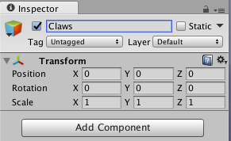

Olá Pessoal,
No post de hoje vou descrever como desenvolver uma versão simplificada do Space Invaders na Unity. Esse tutorial não vai focar na programação, assim para gerar os comportamentos dos elementos de jogo, foi adotada uma série de scripts de comportamentos visuais (Visual Behaviors, um antigo projeto meu).
Começamos com a criação de um projeto novo na Unity, após pressionar o new da tela inicial. Agora, colocamos um nome de projeto e qual o diretório onde esse projeto deverá ser criado.
E assim o projeto “MyGame” foi criado com sucesso pela Unity. Na próxima figura, percebemos que no sistema de arquivos, a Unity criou três diretórios: Assets. Library e ProjectSettings. Na pasta Assets devemos colocar todos os arquivos que serão utilizados no jogo: scripts, spritesheets, texturas, modelos 3d, sons e etc. A pasta Library ficam os uma versão dos assets já compilados para se adequar as configurações de cada plataforma. Já na pasta ProjectSettings, a Unity armazena as configurações do projeto: seus sistemas de tags, layers, configurações de build e etc. Na pasta Temp o executável é montado no momento do processo de build do projeto.
A interface da unity é dividida principalmente nas seguintes tabs:
- Hierarchy: mostra quais os gameobjects estão em cena.
- Inspector: permite inspecionar os componentes dos gamesobjects ou inspecionar as opções de configuração de projeto ou importação de assets.
- Project: espelha a pasta MyGame/Assets/ do sistema de arquivos
- Scene: é a minha cena de jogo, onde posso posicionar gameobjects
- Game: é a tab que mostra a renderização e a execução do jogo
- Console: mostra os erros e warnings do projeto
- AssetStore: uma loja de assets da Unity para venda e compra de qualquer tipo de artefato para o desenvolvimento com a Unity.
Esse layout de tabs é o default. Pode ser trocado no menu superior direito por algum das opções disponíveis. Ou mesmo pode ser editado, as tabs podem ser arrastadas livremente e ao criar um layout que o agrade, essa opção pode ser salva e carregada posteriormente em qualquer outro projeto dessa mesma máquina. Observem que eu criei a minha própria opção: "CrazyLayout".
Bem, vamos tentar entender o que temos no nosso projeto da Unity até agora. Olhando para a tab de Hierarchy vemos dois GameObjects: "Main Camera" e "Directional Light".
No GameObject da câmera vemos vários componentes: Transform, Camera, GUILayer, FlareLayer, AudioListener.
O componente Camera permite a renderização do jogo. Podemos pensar que ele age como uma câmera filmando nossa cena e apresentando o conteúdo filmando ao usuário através da tab Game.
O componente Transform é um dos mais importantes, através dele podemos alterar o posicionamento dos gameobjects no espaço da cena, além de sua rotação e escala.
Agora vamos criar algumas pastas na unity. Geralmente, recomenda-se seguir um padrão de nomes de pastas para facilitar a busca por assets a medida que o projeto aumenta de tamanho.
Neste projeto vamos usar as pastas: Prefabs, Scenes e Scripts.
Vamos aproveitar para salvar nossa cena em Scenes/Game.unity.
A Unity traz alguns elementos básicos que podemos usar em nossos jogos. Seguindo a opção vista na imagem abaixo, vamos adicionar um cubo na cena.
Assim, na tab de Hierarchy podemos conferir o cubo adicionado.
Já na tab de Inspector, verificamos seus componentes:
- Transform: para posicionamento, rotação e mudança de escala
- MeshFilter: que armazena as informações de geometria do objeto (aka. Mesh).
- BoxCollider: um componente importante para detectar colisões no jogo
- MeshRenderer: renderiza o nosso cubo a partir das informações de geometria contidas no MeshFilter e também usando as informações providas pelo Material
O posicionamento do cubo pode ser alterado ao inserir novos valores nos campos de Position do Transform. Também é possível na cena utilizar as setas azul, vermelha e verde que aparecem ao selecionar o cubo. Esse tipo de element visual é conhecido como Gizmo.
É possível resetar todas as alterações no Transform atráves da opções Reset no menu de configurações do componente.
Para facilitar nossa manipulação do cubo, vamos ativar as opções de snap. No modo snap o cubo pode ser arrastado para qualquer uma das três direções em saltos de uma unidade fixa.
Na janela de Snap Settings podemos configurar a movimentação do nosso cubo em modo snap.
Ao pressionar Ctrl+D ou Cmd+D podemos clonar nosso cubo, e ao movimentar o cubo enquanto pressiona o Ctrl/Cmd podemos realizar o seu deslocamento em modo snap.
Clonando vários cubos podemos fazer nossa linha, com exatos 13 cubos.
A opção Empty permite criar um GameObject vazio, somente com o componente Transform.
Vou renomear o GameObject vazio para 'Line' e então resetar o Transform para seus valores padrões. Ao selecionar todos os cubos, podemos arrastá-los para dentro da 'Line'.
Para melhor visualizar e editar o cubo, vou alterar as opções de shading da cena.
Agora ao clonar a 'Line' também estaremos clonando todos os 13 cubos contidos nela. Dessa maneira podemos a 'Line' duas vezes e arrastá-las para cima da linha original. Ao selecionar individualmente um cubo, podemos deletar apertando del/Cmd+del. Em poucos passos, nossos cubos podem ficar no formato da figura abaixo.
Copiando mais uma linha para cima, temos o corpo do nosso personagem. Para deixar a visualização dos objetos mais fácil, vou criar um GameObject vazio 'Body', resetar seu Transform e colocar como filhos todos os outros objetos 'Line' criados.
Copiando um cubo começamos o processo de criação da antena.
Aproveito para criar um GameObject vazio chamado 'Antenna' resetando seu Transform e arrasto o cubo criado anteriormente.
Clonando mais alguns cubos, finalizamos a 'Antenna'.
O próximo passo é criar um GameObject 'Claws' com seu Transform resetado.

Clonando os cubos, tal como dispostos na imagem abaixo, finalizamos as garras do nosso personagem.
Agora nós temos o nosso Space Invader. Para sua melhor edição, crio um GameObject 'Cubes' com Transform resetado e arrasto o 'Body', 'Antenna' e 'Claws'. Por fim, vamos criar um GameObject 'SpaceInvaders' também resetando seu Transform para onde jogamos o 'Cubes'.
Selecionando o 'Cubes' alteramos sua escala para (0.2, 0.2, 0.2)
Clicando na tab Games, podemos ver como o personagem será visualizado pelo jogador.
Na nossa câmera, alteramos a propriedade 'Clear Flags' para 'Solid Color' e o cor de Background para (0,0,0,0).
Clonando e criando objetos vazios como nos passos anteriores, temos o nosso 'Player'.
Agora na tab de Game podemos visualizar os nossos personagens.
Para adicionar mais movimento para nossa cena, vamos usar alguns scripts de programação Visual para dentro da pasta 'Scripts'.
Inspecionado o GameObject 'SpaceInvaders' podemos adicionar novos componentes pressionando o botão 'Add Component'.
Adicionando o script 'Move' do VisualBehaviors.
Adicionando e configurando o script 'Move' do VisualBehaviors.
O script 'CallEvent' permite alterar o comportamento de outros scripts.
Na bloco de 'Action', pressionamos o botão de '+' para adicionar uma ação. Selecionamos um GameObject que irá sofrer a modificação de comportamento.
Agora, escolhemos qual método de qual componente será alterado. O método 'ChangeDirectionX' permite inverter a direção de movimento do script 'Move'.
O movimento do jogador pode ser implementado por dois componentes 'Move'.
Então criamos o GameObject 'Bullets' tal como mostrado na figura abaixo.
Adicionando o componente 'Move' para que nossa bala possa se movimentar para cima em direção ao 'SpaceInvader'.
Arrastando o GameObject 'Bullets' para a tab de Project podemos criar um prefab, um objeto pre-fabricado que pode ser replicado ao longo do nosso jogo.
Vamos alterar a layer do objeto 'Bullets'
Criamos a layer 'Bullets'
E alteramos o prefab 'Bullets'
Ao adicionar o script 'Generate' podemos gerar nossos disparos.
No 'SpaceInvaders' adicionamos o script 'DestroyMe', configurando o nosso inimigo para ser destruído ao ser tocado por algum objeto da layer 'Bullets' Também adicionamos o componente de colisão 'BoxCollider' e um RigidBody sem gravidade e com suas rotações congeladas.
Não podemos esquecer de ativar o checkbox de 'isTrigger' do 'BoxCollider' do nosso inimigo.
E na bala, adicionamos um BoxCollider também como trigger.
Até um próximo tutorial!
There are comments.